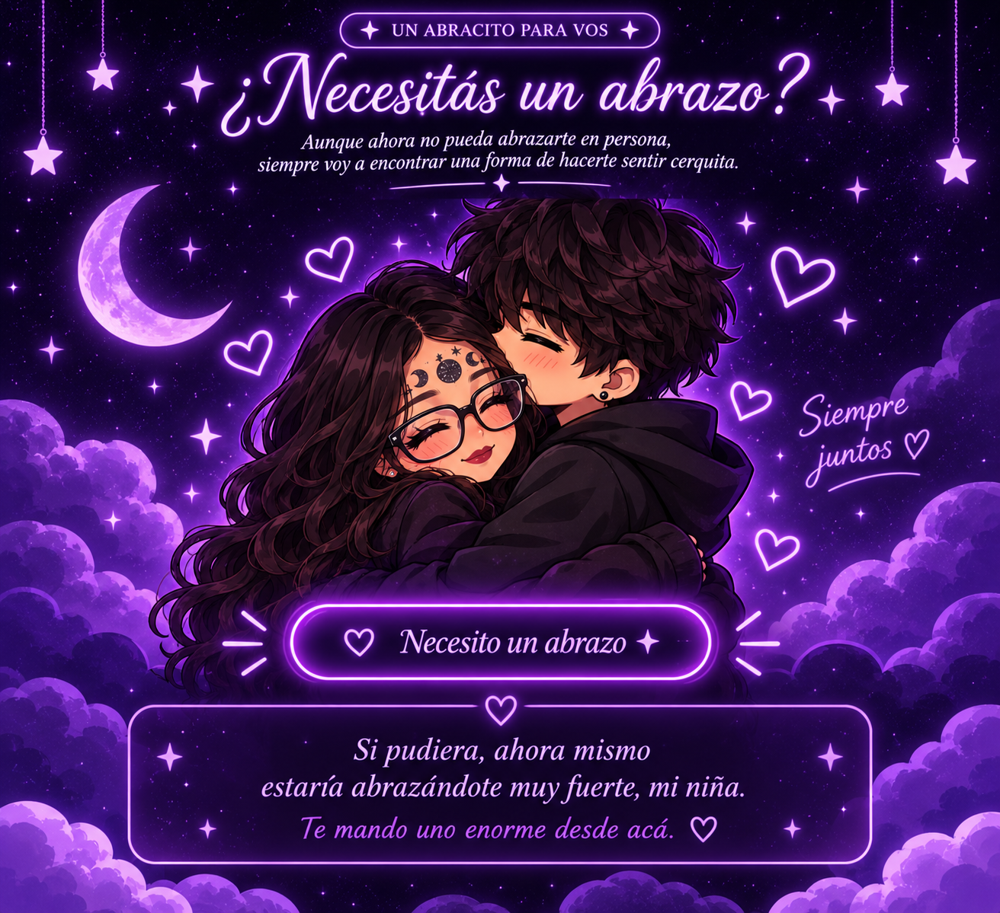

M.A.I
Milo J
Esta canción me recuerda a nosotros porque habla de encontrar a alguien que llega inesperadamente y termina convirtiéndose en una de las personas más importantes de tu vida. Y eso es exactamente lo que me pasó con vos.
0:00
UN PEQUEÑO UNIVERSO PARA NOSOTROS
Tres meses de recuerdos, sonrisas y un amor que sigue creciendo.
Descubrir nuestro mundo ✦UN PEDACITO DE NOSOTROS
Un rinconcito donde guardo las cosas que nacen de tus manos y los recuerdos que fuimos creando juntos.
Cada dibujo tuyo tiene algo de vos, y por eso es tan especial para mí.
Pequeños recuerdos que siempre voy a querer conservar.
UN MONTÓN DE PEQUEÑOS DETALLES
Tocá cada tarjeta y descubrí lo que tengo para decirte.
UNA SORPRESA PARA VOS
Hay algo que preparé especialmente para vos. ¿Te animás a descubrirlo?
Tocá el cofre para abrirlo
PARA MI PERSONA FAVORITA
Te volvería a elegir a vos, entre millones de personas y en cualquier parte del universo. No sé cómo tuve tanta suerte de encontrarte, pero sí sé que quiero seguir creando recuerdos con vos, escuchándote, riéndome con vos y compartiendo muchos momentos más.
Felices tres meses, mi niña preciosa ✦
PEQUEÑOS RECUERDOS PARA SIEMPRE
Guardé algunas cositas para que puedas descubrirlas cuando quieras.
UN MENSAJITO PARA VOS
DESDE QUE EMPEZÓ NUESTRA HISTORIA
Cada segundo a tu lado es un recuerdo más.
Días
Horas
Minutos
Segundos
Y todavía nos quedan muchísimos momentos por vivir juntos. ✦
UN PEDACITO DE MI CIELO PARA VOS
Hay deseos que no necesitan pedirle nada al universo, porque simplemente deseo que te pasen a vos.
UN ABRACITO PARA VOS
Aunque ahora no pueda abrazarte en persona, siempre voy a encontrar una forma de hacerte sentir cerquita.

UNA PEQUEÑA SORPRESA PARA VOS
Hay pequeñas cosas que quiero recordarte. Encontrá la estrellita y descubrí una de ellas.
NUESTRA MÚSICA
Tres canciones que me hacen pensar en nosotros.
Milo J
Esta canción me recuerda a nosotros porque habla de encontrar a alguien que llega inesperadamente y termina convirtiéndose en una de las personas más importantes de tu vida. Y eso es exactamente lo que me pasó con vos.

Milo J
Esta canción me hace pensar en vos, en lo mucho que me gustás y en lo especial que sos para mí. Si pudiera elegir a alguien para dedicarle cada palabra bonita, siempre serías vos.

LIT killah
Esta canción representa esas ganas que tengo de dejar de verte solamente a través de una pantalla. Sueño con el día en que pueda tenerte enfrente, abrazarte y no tener que despedirme por una llamada.
UN ÚLTIMO REGALITO PARA VOS
Hay palabras que merecen guardarse para siempre.
Con mucho amor, Cristian
PARA VOS, KAROL
No sé ni por dónde arrancar porque siento que son muchas cosas las que quiero decirte y no sé si me alcanzarán las palabras para expresar todo lo bonito que siento por vos y todo lo que significás para mí, pero me voy a tomar un momento para escribirte algo especial y que te haga realmente feliz, porque no con cualquier persona se cumplen 3 meses en una relación como la nuestra.
Primero que nada, quiero agradecerte por estar todo este tiempo conmigo y por cada lindo momento que pasamos, ya sean risas, conversaciones, tonterías o hasta cuando los días son malos y vos estás ahí. Igualmente, para muchas personas 3 meses se les deben hacer poco tiempo, pero yo siento que en este tiempo compartimos un montón de cosas, aprendimos a conocernos más y fuimos creando algo que realmente valoro mucho.
Quiero que sepas que me hace muy feliz tenerte en mi vida y no lo digo solamente porque hoy cumplimos 3 meses y sea una fecha especial, lo digo porque de verdad me gusta mucho compartir mis días con vos. Me gusta saber de vos, escuchar cómo estuvo tu día y cómo te fue en la escuela, o si comiste o no comiste. Sé que puedo ser algo pesado porque puedo llegar a sonar como tu papá en vez de tu novio, pero lo hago porque me preocupa que estés bien. También me gusta conocer las cosas que te hacen feliz, acompañarte cuando algo sale mal y poder sacarte una sonrisa cuando más lo necesitás. Me gusta la confianza que fuimos armando y que podamos hablar de cualquier cosa, hacer chistes, molestarnos mutuamente y pasar de una conversación completamente seria a decir las mayores mierdas funables posibles XD.
Y hay algo que no quiero que nunca olvides, y es que sos una persona muy especial para mí. Me encantás muchísimo, me encanta tu forma de ser, tus caprichos, tus ocurrencias, tu manera de expresarte y esas cosas que seguramente vos no apreciás o no notás demasiado. Me gusta conocerte cada día un poquito más y descubrir nuevas partes de vos, darme cuenta de que siempre hay algo nuevo que me hace quererte todavía más. No necesitás ser perfecta ni cambiar nada de vos para que yo vea lo maravillosa que sos. Me gusta que seas vos, con tus virtudes, tus días buenos y también esos días en los que no tenés ganas de nada.
Gracias por la confianza que me das, por permitirme conocer partes de vos que quizás no compartís con cualquiera, por contarme tus cosas y dejarme acompañarte en momentos en los que necesitás hablar o simplemente tener a alguien ahí. Quiero que conmigo siempre puedas sentirte tranquila, que no tengas que fingir estar bien cuando no lo estás y que sepas que siempre me vas a poder contar lo que quieras sin miedo a que te juzgue. No siempre voy a tener las respuestas o las palabras perfectas, ni tampoco voy a saber cómo solucionar todo, pero siempre voy a escucharte, comprenderte y hacerte sentir acompañada.
Obviamente, no todos los días van a ser iguales y a veces podemos tener nuestros choques culturales, nuestras diferencias, malentendidos o simplemente días en los que las cosas no salgan como esperamos, pero quería que sepas que para mí esto no se trata solamente de disfrutar los momentos bonitos, también se trata de poder aprender juntos, entendernos mejor y encontrar la manera de superar las pequeñas dificultades sin olvidarnos de lo muchísimo que nos queremos. No quiero que seas alguien diferente conmigo, porque justamente lo que más valoro es poder conocerte tal cual sos.
Me pongo a pensar en todo lo que vivimos durante estos 3 meses, como las pérdidas de algunos amigos, ya sea Doble, Glam, Limbo, Apolo o hasta la innombrable XD, pero me da mucha ternura saber que aún seguimos juntos. También me da mucha ternura darme cuenta de cuánto cariño llegué a tenerte. Hay momentos que vistos desde afuera pueden parecer insignificantes, pero yo les tengo un valor enorme. Momentos como las pequeñas conversaciones que tenemos y que se alargan sin darnos cuenta, las bromas que hacemos y que solamente entendemos nosotros, como lo del té/mate o el arroz congrí/arroz con tierra JAJAJA, las veces en las que conseguimos hacernos reír y todos esos detalles que hacen que un día normal termine siendo más bonito gracias a vos.
Y todavía nos quedan muchísimas más cosas por vivir, y quiero seguir creando recuerdos con vos. Quiero seguir conociéndote, descubrir tus gustos, tus sueños, tus ideas y todas esas cosas que todavía no sé. Quiero celebrar muchos más meses a tu lado, tener anécdotas nuevas de las que podamos reírnos en un futuro y poder mirar atrás para recordar todo lo que construimos y cómo empezó todo.
También quiero que nunca dudes de lo importante que sos para mí. Si alguna vez tenés un día en el que sentís inseguridad, tristeza o simplemente no te ves de la misma manera en la que yo te veo, ojalá recuerdes que hay alguien que encuentra muchísimas cosas bonitas en vos. Alguien que disfruta de tu compañía, que se interesa por cómo estás y que se pone feliz con solo saber que estás bien. Me gustaría hacerte ver por un ratito todo lo lindo que yo veo cuando pienso en vos, porque a veces ni siquiera vos te das cuenta de lo especial que sos.
No sé qué nos espera más adelante, pero sí sé que quiero seguir compartiendo este camino de la vida con vos. No quiero apresurar las cosas ni tampoco te voy a prometer un mundo perfecto, simplemente quiero que sigamos disfrutando de nosotros mismos, cuidándonos y dándole el valor que merece lo nuestro. Para mí lo importante es que podamos seguir eligiéndonos y que nunca nos falten las ganas de hablar, de reírnos, de escucharnos y de hacer que el otro se sienta querido.
Gracias, mi amorcito, por estos tres meses, por cada risa que me sacaste, por cada momento hermoso que compartimos y por hacerte un lugar tan bonito en mi vida. Espero que yo también haya podido hacerte feliz, aunque sea un poquito, y que en algún momento hayas sentido todo el cariño que intento transmitirte cuando no encuentro las palabras adecuadas para hacerlo.
Te quiero muchísimo, mi reina de ojos lindos, y espero que este sea solamente otro de los muchos meses que todavía nos quedan por celebrar. Quiero seguir sumando días, recuerdos y motivos para sonreír con vos, y deseo muchísimo poder verte y poder decirte todo esto en persona y después besarte fuerte, porque sabés que yo beso mejor >;) JAJAJA.
Felices tres meses, princesa de mis sueños hermosa. Muchas gracias por ser vos y por dejarme compartir una parte de tu vida conmigo. Te amo muchísimo y espero que hoy puedas sentirte tan especial como realmente sos para mí. ❤️